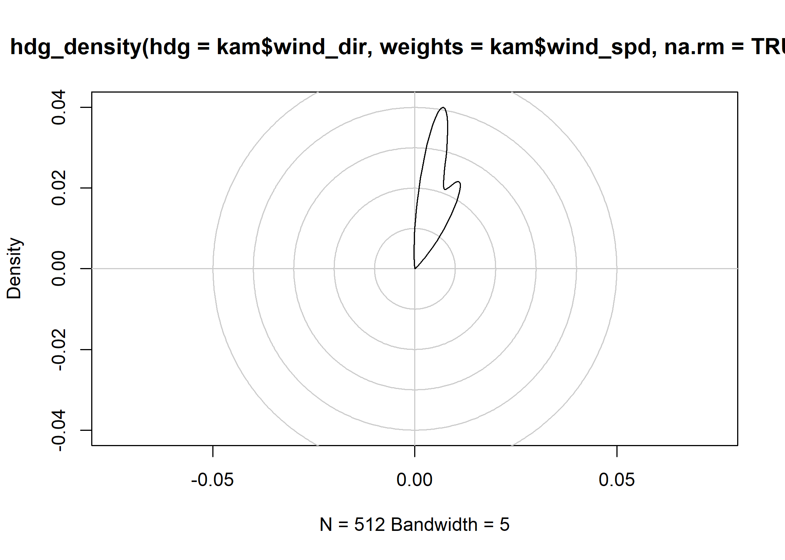
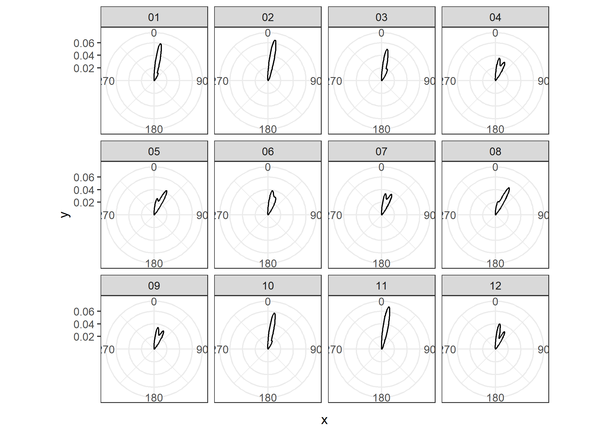

The goal of headings is to provide well-tested functions for working with orientation data (headings), including aggregation (e.g., mean, sd) and correction (e.g., declination).
Installation
You can install the development version from GitHub with:
# install.packages("devtools")
devtools::install_github("paleolimbot/headings")Example
The headings package can calculate a proper mean and standard deviation of compass headings:
library(headings)
# totally bogus since 0 and 360 are identical!
mean(c(350, 355, 360, 0, 5, 10))
#> [1] 180
sd(c(350, 355, 360, 0, 5, 10))
#> [1] 191.7551
# everybody wins!
hdg_mean(c(350, 355, 360, 0, 5, 10))
#> [1] 0
hdg_sd(c(350, 355, 360, 0, 5, 10))
#> [1] 6.458254For more statistical analyses of directions, you can use the circular package. A convenience constructor hdg_circular() is provided to construct objects in the way that the circular package expects for compass headings.
Functions to correct for magnetic declination are also provided for the IGRF13, WMM2020, and EMM2017 models.
hdg_decl(-64, 45, year = 2021)
#> [1] -16.88586
hdg_true_from_magnetic(13.40, -64, 45, year = 2021)
#> [1] 356.5141
hdg_magnetic_from_true(356.51, -64, 45, year = 2021)
#> [1] 13.39586As an example, heading aggregation can be used to summarize climate and/or current directions over time.
library(tidyverse)
data("kamloops2016")
kamloops2016 %>%
as_tibble() %>%
filter(is.finite(wind_dir), is.finite(wind_spd)) %>%
group_by(month) %>%
summarise(
mean_wtd = hdg_mean(wind_dir, weights = wind_spd),
sd_wtd = hdg_sd(wind_dir, weights = wind_spd)
)
#> `summarise()` ungrouping output (override with `.groups` argument)
#> # A tibble: 12 x 3
#> month mean_wtd sd_wtd
#> <chr> <dbl> <dbl>
#> 1 01 13.5 7.79
#> 2 02 11.9 6.00
#> 3 03 15.0 8.07
#> 4 04 18.1 8.97
#> 5 05 20.5 8.86
#> 6 06 16.8 8.34
#> 7 07 18.4 8.70
#> 8 08 21.8 8.32
#> 9 09 18.6 9.43
#> 10 10 13.7 7.44
#> 11 11 11.0 5.26
#> 12 12 17.5 9.59The headings package also comes with a circle-aware kernel density estimator for visualizing vectors of headings. For circular kernel densities in a non-visualization context, use the circular package (circular::density.circular()).
plot(
hdg_density(
kamloops2016$wind_dir,
weights = kamloops2016$wind_spd,
na.rm = TRUE
)
)
To use in ggplot2, you will need to extract the values from the density output:
kamloops2016 %>%
group_by(month) %>%
summarise(
broom::tidy(hdg_density(wind_dir, weights = wind_spd))
) %>%
ggplot(aes(x, y)) +
geom_line() +
coord_polar() +
scale_x_continuous(breaks = seq(0, 360, by = 90)) +
facet_wrap(vars(month)) +
theme_bw()
#> `summarise()` regrouping output by 'month' (override with `.groups` argument)